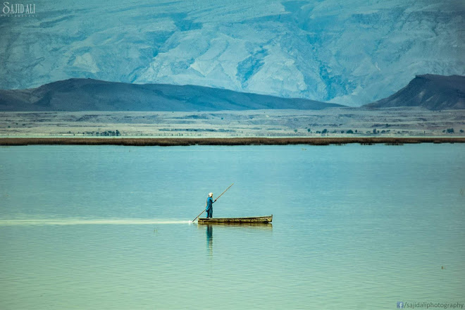

Gorakh Hill
Gorakh Hill is a high altitude (5,688 ft (1,734 meter) plateaus in the province of Sindh facied as a Hill Station. It is located in the Kirthar Mountains 93 km north west of Dadu city or aproximatly 500 Kilometers from Karachi. Gorakh Hill is spread over 2,500 acres (10 km2) The Plateau also serves as gateway for the villagers of Khuzdar District, Balochistan, who come over to the village, Wahi Pandi, in Sindh's segment of Kirthar, about a third way downhill from Gorakh Hill Station... for purchasing food and other Utilities.
Currently The Gorakh Hills summit can only be reached with 4x4 vehicles. The last small town before the Gorakh Hill is Wahi Pandi, settled in the foot of the Kirthar range. The road takes mountain turns and ascends slowly at the milestone of 53 km when one enters the Yaroo Pass
Nai Gaj
Nai Gaj Dam is an embankment dam currently under construction on the Gaj River in the gorge area at the edge of Kirthar Mountains range at about 65 kilometres (40 mi) north-west of Dadu city in Dadu District, Sindh Province of Pakistan. Construction began in 2012 and when complete, its power station will have a 4.2 MW installed capacity. Consultant supervision by Techno Consult International (TCI) from Karachi, Pakistan.
Manchar Lake
Lake Manchar is located at a distance of 18 kilometers from Sehwan Sharif on west side of the River Indus, in district Dadu, Sindh. It is the largest shallow and fresh water lake of Pakistan and one of the biggest of Asia. Water in the lake is collected by small water streams in Kirthar Mountains and empties into River Indus. The total area of lake varies between 350 square kilometers to 520 square kilometers with seasons.
The lake was constructed in 1930 when Sukhar Barrage was constructed on River Indus. In 1932, flood bunds were constructed on its north-eastern and northern boundaries. Actually a natural source of fresh water of this kind is a main resource of water in an arid region. Lake Manchar and surrounding areas are great spots for spending a holiday. People from near and far areas come to visit this lake and enjoy boating and fishing.
Ghazi Shah Mound
The mound of Gaji Shah also known as Mari Khar measures 162 m north-south and 132 m east-west and the total area of the occupation on the mound is 21384 sq.m, it is about 6.7 meters high from the surrounding plains. The site of Gaji Shah was discovered by N.G Majumdar in (1930-1931), it was later visited and excavated by Dr. Louis Flam intermittently from 1975 onwards. The Sindh archaeological project of Dr. Flam was initiated in 1985-1987, 1997-98 and 2001. Majumdar had named the site Gaji Shah, because of its being near the mausoleum of a well-known saint Pir Gaji Shah in the east, at a distance of about 1.5 kms. The artifactual evidence uncovered by Majumdar and Dr. Flam in their excavations and in the recent survey in March 2017 by CDC team, clearly portray it to be Early and Mature Indus site with the presence of Amrian, Mature Indus, Kulli, Nal and Mehi cultural evidence. Nevertheless, it is a multi-period site and the top of the mound excavated by Flam, he reported Mughal period evidence having the presence of a wall, glazed and plain pottery, terracotta beads, glass beads, stone beads, iron objects and a copper coin. It is a protected heritage site under Federal Department of Archaeology heritage list. Accessibility: The Archaeological site of Gaji Shah is located in Taluka Johi, District Dadu, approximately 1.5 kms east of Pir Ghazi Shah Mausoleum and village.
Ancient Grave of Wah Padhi
The Ancient Graves are situated near Wahi Pandhi, Johi tehsil, Dadu District, Sindh, Pakistan, on the top of the hills near foothills of Kirthar Mountains Range. These columned graves are constructed with large slabs of stone on ground surface. The graves are open from northern and southern sides. The western and eastern sides of graves are constructed with stone slabs and also the graves are covered from upper side with slabs. The carpse were placed on ground surface in the graves. The bones can be observed in columned graves on ground surfaces in graves. Due to inscribed word "Behdin" on stone of one grave, it is believed that these ancient graves belonged to Zoroastrians.The word behdin means the good religion which is related to Zoroastrianism.
Ali Murad Mound
The site is located approximately thirteen kilometers from Pir Ghazi Shah and twenty-four kilometers south of Johi town. The site is 336 meters long, 305 meters wide, 8.23 meters high and covers an area of 102,480 square meters. It is stuated on a rock bed which slightly elevates the site above the surrounding plain. The rock bed on which the site is located is a lower extension of a north-south rock outcron which lies to the east of the site. The iste is located approximately eighteen kilometers east of the Kirthar Mountains, at the eastern edge of a large playa, at which flood channels of the shol, nari, haiell, and angai nais of the Kirthar Mountains coverge.Ali Murad is allow mound with no architectural features exposed on the surface of the site. The walls of the site were composed of stone foundations with pise or mud brick superstructures. The rock outcrop nearby the site probably provided the excellent foundation material, and the clay of the playa probably provided the material for the upper-wall construction.